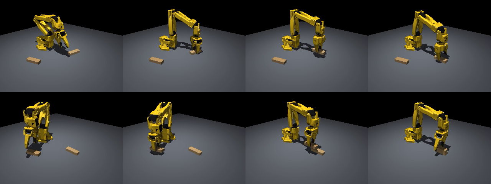
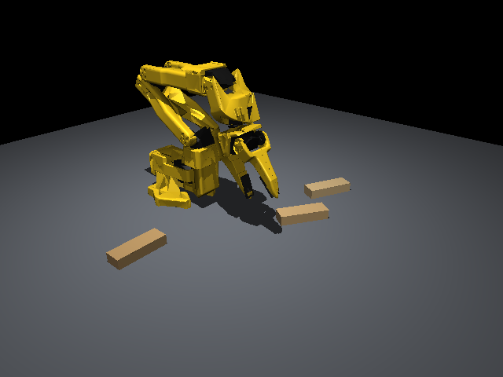
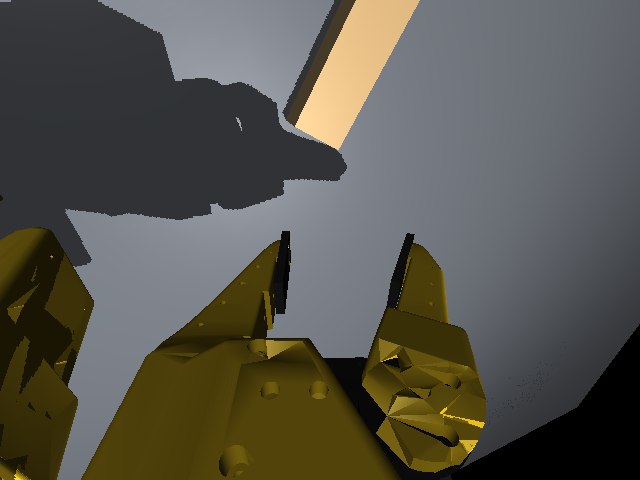
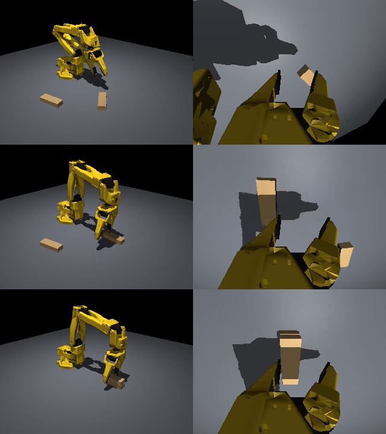

PAI 最終課題 説明資料
LeRobot SO-101 による
ジェンガ積み上げタスクのシミュレータ構築
1. 課題の概要
低価格のオープンソースロボットアーム LeRobot SO-101 が、ジェンガのブロックを積み上げるタスクを、 物理シミュレータ MuJoCo 上に構築した。環境は Docker コンテナにまとめ、だれでも同じ環境を再現できるようにした。 さらに、シミュレータ内で自動的にお手本の動作（デモ）を作り、模倣学習にそのまま使える LeRobot 形式のデータセットを作成した。
今回の範囲は 2 段積みまで。シミュレータの構築、自動デモの作成、デモデータセットの作成までを行った。
100%
自動デモの成功率
（2 段積み、100 回）
（2 段積み、100 回）
100
データセットの
エピソード数
エピソード数
31,982
フレーム数
（30fps・約 18 分）
（30fps・約 18 分）
約 15fps
描画速度
（改善前 4fps）
（改善前 4fps）

2. 目的
- 実機を使わずに試せる環境を作る。 実機での試行は時間がかかり、ブロックの並べ直しやロボットの故障も起こりうる。シミュレータなら何度でも、同じ条件で試せる。
- 模倣学習用のデータを自動で集める。 人が遠隔操作でデモを集める代わりに、シミュレータ内でお手本の動作を自動生成し、大量のデータを短時間で用意する。
- 実機と同じ形式にそろえる。 関節角の単位や名前、データセットの形式を実機の LeRobot と同じにして、学習したモデルを将来そのまま実機で試せるようにする。
3. システム構成
シミュレータ環境MuJoCo 3.17
SO-101 公式モデル
ブロック・カメラ 2 台
SO-101 公式モデル
ブロック・カメラ 2 台
→
自動デモブロックの位置から
逆運動学で軌道を計算
逆運動学で軌道を計算
→
データセットLeRobotDataset v3
関節角・行動・動画
関節角・行動・動画
→
模倣学習（今後）ACT などで学習し
シミュレータで評価
シミュレータで評価
すべて Docker コンテナ内で動作（Ubuntu 24.04 / Python 3.12 / LeRobot 0.6.1 / PyTorch 2.11 + CUDA）
| ブロック | ジェンガと同じサイズ（7.5 × 2.5 × 1.5cm、15g）。平らに寝かせ、毎回ランダムな位置・向きに置く |
|---|---|
| タスク | ロボット正面 25cm のタワー位置に 1 個目を置き、2 個目を同じ向きで上に重ねる |
| 観測 | 関節角 6 次元（腕は度、グリッパは 0=閉〜100=開）＋ カメラ画像 2 枚（front・手首、各 640×480） |
| 行動 | 関節の目標角 6 次元（実機 SO-101 と同じ単位） |
| 成功判定 | 目標の段数に積まれ、グリッパが触れておらず、ブロックが 0.5 秒静止したら成功 |
| 制御周期 | 30Hz（実機のデータ記録と同じ）。物理計算は 600Hz |


4. 工夫した点
①指先に当たり判定（パッド）を追加
- 問題
- 公式モデルのままでは、グリッパの指が凸形状として扱われ、指の間の隙間が埋まってしまう。ブロックを挟めない。
- 対応
- 指の内側に薄い箱形の当たり判定を追加し、ブロックとの接触はこの部分だけで行うようにした。摩擦も指先だけ高く（1.5）した。
②接触を硬くして、めり込みを抑えた
- 問題
- MuJoCo の既定の接触はやわらかく、グリッパを押し付けると物体同士が 2cm 以上めり込んだ。厚さ 1.5cm のブロックでは致命的。
- 対応
- テーブル・ブロック・指先の接触パラメータを硬くし、最大のめり込みを約 6mm に抑えた。
③片側だけ動く指に合わせて、掴む位置をずらした
- 問題
- SO-101 のグリッパは片側の指だけが動く。ブロックの中心を狙って下ろすと、動かない側の指がブロックの上に乗り上げた。
- 対応
- 掴む位置を、指が開く方向に 8mm ずらして下ろすようにした。持ち上げテストで 10 回中 10 回成功し、運搬中のずれは 1.5mm 以下になった。
④描画を約 4 倍に高速化
- 問題
- Windows（WSL2）上の Docker では GPU で描画できず、CPU での描画になる。カメラ 2 台の画像を作るのに 4fps しか出ず、データ収集に時間がかかりすぎた。
- 対応
- ロボットの見た目用のポリゴン数を 32 万から 9.4 万に減らし、影とアンチエイリアスの設定を軽くした。640×480 で約 15fps になった。
⑤実機の LeRobot とデータ形式をそろえた
- 対応
- シミュレータ内部の角度（ラジアン）を、実機の LeRobot と同じ単位（度、グリッパは 0〜100）に変換した。関節名（
shoulder_pan.posなど）とデータセットの形式も実機と同じにし、LeRobot の学習スクリプトでそのまま読み込めるようにした。
⑥手が届く範囲を調べてから段数を決めた
- 対応
- グリッパを真下に向けたまま届く高さを計算し、約 10cm までと分かった。ジェンガのブロックでは 4 段まで届く。この結果をもとに、ブロックの配置範囲とタワーの位置を決めた。
5. 結果
自動デモの成功率
| 段数 | 成功率 | 備考 |
|---|---|---|
| 2 段（今回の範囲） | 100 / 100 | データセット収集時は 101 回中 1 回失敗 |
| 3 段（参考） | 98 / 100 | 失敗 2 件は、最後に成功判定が出なかったもの |
| 4 段（参考） | 20 / 20 | |
| 5 段（参考） | 0 / 20 | 真下向きの姿勢ではグリッパが届かない |
作成したデータセット
| 名前 | local/so101_jenga_stack2（LeRobotDataset v3） |
|---|---|
| 規模 | 100 エピソード、31,982 フレーム （30fps、1 エピソード平均 10.7 秒） |
| 内容 | 関節角（6）、行動（6）、front カメラ動画、手首カメラ動画、タスク文 "Stack 2 Jenga blocks into a single tower." |
| 収集時間 | 約 65 分（成功したエピソードだけを保存） |

6. 課題と今後
| 課題 | 内容と対応案 |
|---|---|
| 模倣学習 | 作成したデータセットで ACT などを学習し、シミュレータ上で成功率を評価する。 |
| 5 段以上 | 真下向きの姿勢では届かない。グリッパを傾けて置く動作と、ブロックを掴み直す動作を追加する。 |
| 描画速度 | CPU 描画のため、1 エピソードの収集に約 40 秒かかる。GPU ドライバ更新後に GPU 描画を再検討する。 |
| 実機との差 | 見た目・摩擦・モーター特性は実機と完全には一致しない。色・照明・摩擦などをランダムに変えて学習し、実機でも動くようにする。 |
7. 実行方法
Docker が使える PC で、プロジェクトのフォルダから次のように実行する。
# 環境の構築（初回 15〜20 分）と SO-101 モデルの準備 docker compose build docker compose run --rm sim bash scripts/fetch_so101.sh docker compose run --rm sim python scripts/make_lowpoly.py # 自動デモの成功率の測定と、データセットの作成 docker compose run --rm sim python scripts/run_scripted.py --n-blocks 2 --episodes 100 docker compose run --rm sim python scripts/record_demos.py --n-blocks 2 --episodes 100